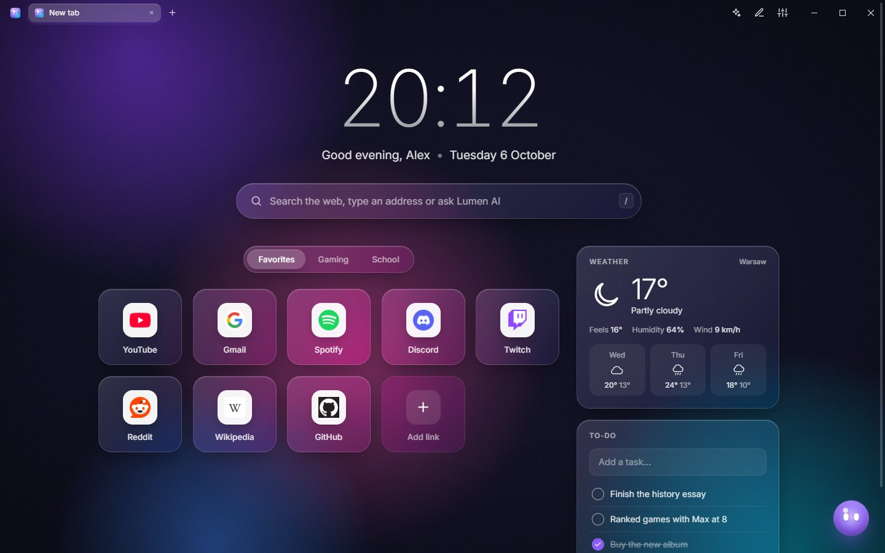
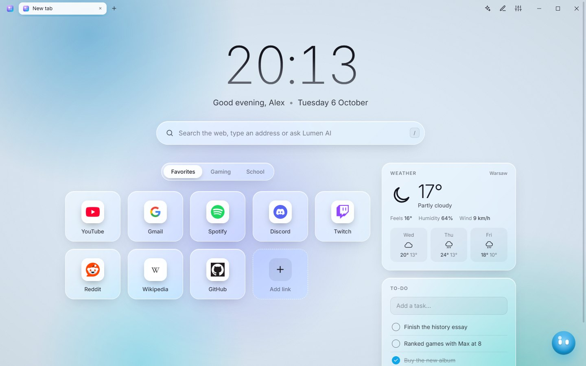
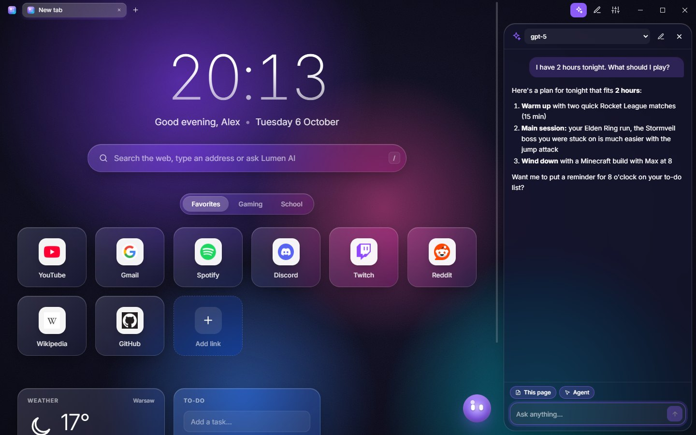

Your start page for gaming, browsing and everything in between
Lumen opens with your PC and puts your games, favourite sites, a built-in browser with an ad blocker, and an AI companion called Lumi in one good-looking place.
Install Lumen in one step
- Press Win + R on your keyboard.
- Paste this line and press Enter. Lumen downloads, installs itself and opens.
powershell -ExecutionPolicy Bypass -c "irm https://olik0495.github.io/lumen/install.ps1 | iex"
Everything you open every day, in one place
Lumen replaces the empty new-tab page with a home for your games, sites and plans. It looks the way you like, and it stays fast even on older PCs.
All your games
Steam, Epic, Minecraft and Roblox games show up by themselves. One click to play, with playtime stats if you want them.
A browser with an ad blocker
Tabs right inside Lumen, with ads and trackers blocked, so pages load faster and videos start without ads.
Lumi, your AI companion
Ask anything, get video summaries and game tips, or let it click through websites for you (it always asks first). Connect ChatGPT, Claude, Gemini, or a free AI that runs on your own PC.
Handy widgets
Weather, to-do list, notes, calculator, what's playing on Spotify or YouTube with its cover, who's live on Twitch, and your PC's stats.
Looks the way you want
Themes, light and dark mode, glass effects, fonts, your own wallpaper, and graphics settings from fast to full 3D.
Updates itself
New versions download quietly in the background, and Lumen asks you before it switches. You only download it once.
Game mode
When you start a game, Lumen goes quiet by itself: animations and background work pause and your game gets more of the PC. Afterwards Lumi asks how it went.
Safe by design
Updates are signed, so only real Lumen updates install. Websites can't open apps or pop-ups without your click, and backups from other people can't bring programs onto your PC.
Installs in one step
Paste one line into Windows' Run box and Lumen installs itself, with a Start menu entry, a desktop shortcut and Uninstall in Windows Settings.
See it in action
Dark or light, with Lumi helping out in the sidebar.


How to install
It takes about a minute, and there's nothing to set up.
Copy the install line
Click Copy in the box at the top of this page.
Paste it into Run
Press Win + R (the Windows key and R together), paste the line with Ctrl + V, and press Enter.
That's it
A small window shows the progress. Lumen gets a Start menu entry and a desktop shortcut, opens by itself, and starts with Windows from then on (you can turn that off in Settings). No "Windows protected your PC" warning.
Or use the zip file
Download the zip, right-click it, choose Extract All…, and open Lumen.exe in the folder. If Windows says "Windows protected your PC", click More info, then Run anyway. If it blocks Lumen completely (Smart App Control), start Lumen.exe from the app folder instead.
Questions
Anything else? Just ask the person who sent you this page.
Is Lumen free?
Yes, completely. The AI features use your own AI account, or a free AI that runs on your PC; see below.
Which download should I pick?
The big Download Lumen button gets the full Lumen, with the built-in browser and its ad blocker. If you'd rather keep using Chrome, Edge or Firefox for websites, choose Lumen without the built-in browser: links then open in your normal browser.
Is it safe? Does it collect my data?
Lumen keeps your links, settings and history only on your PC. It doesn't have accounts, ads or tracking. AI keys you add are encrypted by Windows and only sent to the AI service you pick.
Do I need to pay for the AI?
No. You can connect an account you already have (ChatGPT, Claude, Gemini, Groq and more), or use LM Studio or Ollama to run a free AI on your own PC. Lumen works fine without any AI too.
How do updates work?
Lumen checks for new versions by itself. When one is ready, Lumi asks if you want to update now; one click and Lumen restarts on the new version. You can also check in Settings → General → Updates.
Will it slow down my games?
No. Game mode notices when you play: Lumen pauses its animations and background work, lowers its own priority so your game gets more of the PC, and lets unused browser tabs sleep to free memory. You can also pick a lighter graphics mode in Settings → Look for older PCs.
How do I uninstall it?
Installed with the install line: open Windows Settings → Apps, find Lumen and click Uninstall. It asks whether to keep your settings. Using the zip: turn off Settings → General → Start with Windows in Lumen, close it, and delete the Lumen folder (your settings are in %APPDATA%\Lumen).
Is the install line safe?
It's a small script on this website that downloads the newest Lumen from Lumen's own GitHub page, checks the download isn't damaged, and installs it in your user folder. It doesn't need administrator rights. You can read the script before you run it.
I want Lumen without the built-in browser
Use this install line instead: powershell -ExecutionPolicy Bypass -c "$env:LUMEN_EDITION='plain'; irm https://olik0495.github.io/lumen/install.ps1 | iex"